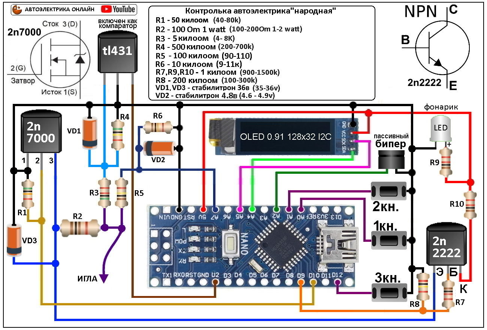

Компоненты
Компоненты и аналоги
На рисунке компоненты для сборки контрольки, они доступные и недорогие, если что то не найдете то используйте аналоги, резистор на 10 килоом и 100 килоом ставьте обязательно именно на такое сопротивление иначе вольтметр сложно будет корректировать, остальные резисторы плюс минус 15% без проблем, стабилитроны любые на указанные вольты.
Вариант для покупки основного в одном магазине на алиэкспресс:
макетка,
дисплей,
ардуино
Схема контрольки
Электросхема контрольки и описание
На рисунке схема контрольки, она достаточно простая что благотворно скажется на сборке особенно для начинающих, так же компоненты на схеме распространенные и не дорогие.
Немного разберем как работает схема: на транзисторе MOSFET 2n7000, резисторах R1, R2 собрана схема подключения нагрузки, при открытии транзистора на игле контрольки появляется нагрузка в 100 ом, так же данная схема работает для генератора ШИМ просаживая сигнал на игле на минус и пр.
На TL431 и резисторах R4, R3 собран частотомер, TL431 включена нестандартно как компаратор, с ардуино идет сигнал плюс 5 вольт и ТЛ его просаживает, ардуино видя это считает импульсы.
На R5 , R6 построен делитель напряжения для осциллографа и вольтметра он делит входное напряжение на 10 что позволяет измерять до 50 вольт но часть напряжения мы оставим под защиту входа ардуино.
На 2n2222 и резисторах R7, R8, R10 собрана прозвонка, при открытии транзистора на иглу подается напряжение и если это напряжение упадет до нуля сработает пищалка, так же эта схема работает как плюсовой ШИМ и пр.
Фонарик собран на резисторе R9 и белом светодиоде , фонарик светит всегда когда есть питание на контрольке.
Стабилитроны в схеме стоят для защиты от перенапряжения, они скидывают все лишнее на минус.
Сборка на макетке
Сборка контрольки на макетной плате

Контролька собирается на макетной плате (размеры и количество отверстий дано на рисунке) для того чтоб каждый мог повторить ее не вдаваясь в изготовление или заказ печатных плат. Потом на сайте размещу провереные печатные платы для сборки как с выводными компонентами так и с CMD компонентами. Так же контролька все еще находится в стадии усовершенствования и что то может поменятся на макетке это сделать не сложно, а на печатной плате будет затруднительно. На рисунке плата которая разработана под корпус шприца 20 кубов, ее сборка не сильно сложная, пайка лишь усложняется тем что детали перекрываю дорожки и пр.
Сборка на макетке упрощенная
Упрощенная сборка для тестов и начинающих

Упростил плату теперь не надо при сборке чередовать последовательность впайки компонентов, можно паять откуда угодно, например можно запаять ардуино и дисплей и проверить работоспособность, далее запаять кнопки и проверить как они нажимаются и так далее, так же если нет некоторых деталей можно паять так, а потом когда детали появятся добавить, так же плата более ремонтопригодна так как не надо снимать дисплей али ардуино чтоб чтото там подпаять, заменить. По данной плате есть
пошаговая сборка
с проверкой на макетной плате с минисхемой каждого узла.
Плата кажется сильно больше предыдущей но это не так, она стала короче от этого такой эффект. На счет корпуса тут все идивидуально хоть клеить из листов, хоть 3д принтер, хоть папье-маше, хоть термоусадка сами решайте.
Питание контрольки
Простая схема для питании контрольки в автомобиле.

Питание контрольки может быть разным но я предложу свой проверенный вариант который советую всем, как видно на схеме нужно всего 3 детали это стабилизатор и пару конденсаторов, все затягивается в термоусадку и получается небольшое утолщение на проводе перед крокодилами. Данная схема подходит как для работы с грузовиками где напряжение 24-28 вольт и с легковыми авто с напряжением 12-14 вольт, данный преобразователь при работе греется не сильно ведь ток потребления контрольки 30 милиапер (как у хорошего светодиода).
Вам не надо беспокоится о разряде аккумулятора, о том что на морозе или жаре акб испортится, а так же литиевые акб склонны к возгоранию так что советую данную схему как самую простую, доступную и недорогую.
Некоторых жанная схема напрягает тем что придется всегда подключатся к аккумулятору автомобиля и работать с удлинителем, но у удлинителя много преемуществ: у вас всегда честный плюс и минус, а значит все показания которые вы собираете правильные, так же удлинитель позволяет подать питание куда либо например на моторчик стеклоподъемника напрямую и проверить его, также удлинитель если он нетолстый играет роль защиты и нагрузки, 0.75 квадрата замкнутые потребляют 30 ампер что можно использовать для диагностики, замкнутый удлинитель будет грется секунд 15-20 прежде чем начнет плавится так ловите лайфхак :), бросить удлинитель занимает 1 минуту, а если вы сняли неточные показания оттолкнувшись от ржавой железки может работу затянуть и на пол дня.
Вот так может выглядеть плата стабилизатора с USB разьемом, конденсаторы и диод можно любые брать.
Кнопки в корпус
Чертеж кнопок для корпуса из шприца 20 кубов.
На рисунке даны размеры кнопок для корпуса из шприца 20 кубов, кнопки клавишные очень хорошо подходят под данный корпус. Изготавливаются из пластика, можно взять корпус от игрушек, блоков питания, корпусов телевизоров и пр. главное чтоб пластик был жесткий. Выпилить можно пилкой по металлу и подогнать наждачной бумагой или надфилем, но лучше использовать бор машину (гравер) им довольно быстро все делается(стоят они недорого и для тех кто своими руками чтото делает незаменимая вещь, в автоэлектрике тоже кстати пригождается часто). Осью служит игла от шприца ей же и сверлим отверстия, игла острая и сверлит хорошо, самое главное что после сверления отсутствует люфт на оси, далее откусываем иглу так чтоб она немного цепляла стенки шприца и все, кнопки нажимаются на удивление хорошо, и переставить в другой корпус дело 1 минуты так как корпус никак не подгоняется, ни клеить ни закреплять как то нечего не надо, все дежится нза счет распорок зацепа за кнопки и пищалки что все не ушло в корпус. Размеры у вас могут немного отличатся, если пищалка стоит дальше что лучше то и зацеп делайте больше сильного зазора не должно быть. Ниже будут фото кнопок и видео работы.
Видео про сборку
Долго и нудно собираем народную контрольку :)
Пока видео не открыл переходите по ссылке перейти
В видео потихоньку соберем контрольку для корпуса шприц, а так же сделаем кнопки, преобразователь питания, сделаем калибровку. Покажу различные приемы для облегчения сборки, расстановку деталей и пр.
Фото платы
Плата контрольки в реальности
На фото собранная контролька , можно посмотреть как в реальности все выглядит, при сборке до последнего не паяется дисплей и ардуино, потом все проверив запаиваем ардуино, а дисплей подкидываем (в дисплей можно запаять на время контакты мамы), далее когда все проверили и закончили запаиваем дисплей.
Далее делаем кнопки, они клавишные и нажимаются очень хорошо, тут кнопки делались наспех лишь бы проверить работоспособность, получились не красиво, но при этом работают отлично, если постаратся то можно сделать и получше.
Сайт принадлежит автору ютуб канала "Автоэлектрика онлайн", вопросы, предложения, донаты приветствуются!
Все контакты тут!